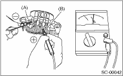
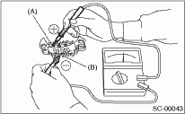
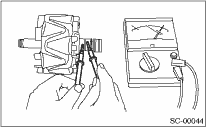
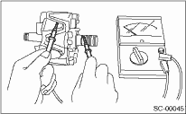
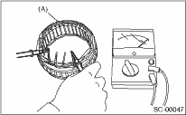
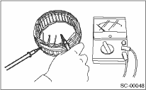
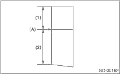
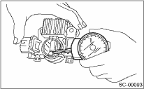

STARTING/CHARGING SYSTEMS(H4SO) > Generator
CAUTION:
There is the possibility of damaging the diodes if a mega-tester (used to measure high voltages) or a similar measuring instrument is used. Never use a mega tester or equivalent for this test.
1. Check the positive diode
Check the continuity between the diode lead and positive side heat sink. If resistance is 1 Ω or less only in the direction from the diode lead to the heat sink, the positive diode is OK.

|
(A) |
Diode lead |
|
(B) |
Heat sink (Positive side) |
2. Check negative diode
Check the continuity between the diode lead and negative side heat sink. If resistance is 1 Ω or less only in the direction from the heat sink to the diode lead, the negative diode is OK.

|
(A) |
Diode lead |
|
(B) |
Heat sink (Negative side) |
1. Slip ring surface
Check that there is no dirt on the slip ring or roughness in the sliding surface. Repair the slip ring surface using a lathe or sand paper.
2. Slip ring outer diameter
Measure the slip ring outer diameter. Replace the rotor assembly if the slip ring is worn.
Slip ring outer diameter:
Standard
22.7 mm (0.894 in)
Limit
22.1 mm (0.870 in)
3. Continuity test
Using a circuit tester, check the resistance between slip rings.
Replace the rotor assembly if the resistance is not within the specified value.
Specified resistance:
Approximately 1.8 — 2.2 Ω

4. Insulation test
Check the continuity between the slip ring and the rotor core or shaft. If the resistance is 1 Ω or less, replace the rotor assembly because the rotor coil is grounded.

5. Ball bearings (rear side)
Check the rear ball bearings. If there is any noise, or the rotor does not rotate smoothly, replace the bearings.
1. Continuity test
Inspect continuity between the stator coil lead wire terminals. If the resistance is 1 MΩ or more, the lead wire is damaged. Replace the stator assembly.

|
(A) |
Stator |
2. Insulation test
Inspect the continuity between the stator coil stator core and lead wire terminals. If the resistance is 1 Ω or less, the stator coil is grounded. Replace the stator assembly.

1. Measure the length of each brush. Replace the brush if wear exceeds service limits. There is a service limit mark (A) on each brush.
Brush length:
Service limit (1)
5.0 mm (0.197 in)
Standard (2)
18.5 mm (0.728 in)

2. Check that there is appropriate pressure on the brush spring. Use a spring pressure indicator to push the brush into the brush holder until the leading end protrudes 2 mm (0.08 in). Then, measure the brush spring pressure. If the pressure is 2.2 N (0.224 kgf, 7.91 oz) or less, replace the brush spring with a new part. 4.8 — 6.0 N (0.489 — 0.612 kgf, 17.26 — 21.60 oz) pressure is required on the new spring.

Check the front ball bearings. Replace the ball bearings if there is resistance in the rotation, or if there is any abnormal noise.